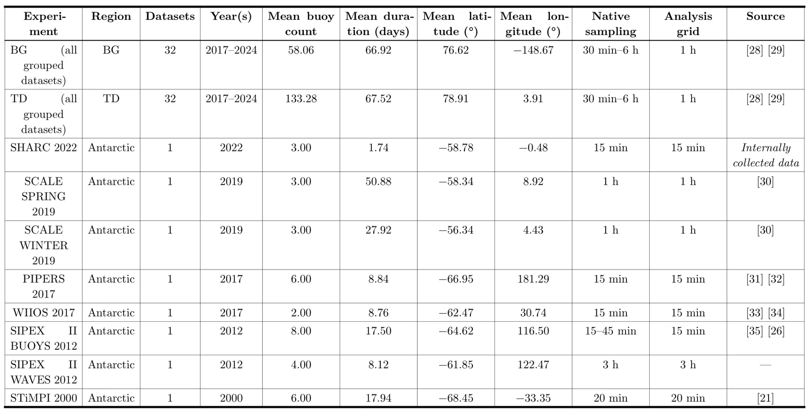

利用旋转谱与主成分分析比较北极和南极的 GNSS 海冰漂移Comparing GNSS Derived Sea Ice Drift in the Arctic and Antarctic using Rotary Spectra and Principal Component Analysis
GNSS 数据分析扎实，给出跨区域观测与采样设计的参考；但与定位、GNSS-SLAM 或融合算法的直接关联较弱，属于主题边界内的低优先级跟踪项。
一句话工作总结
用 GNSS 浮标长时间序列比较两极海冰运动的频谱结构，为 GNSS 观测系统设计提供频率分辨基线。
摘要
论文对 GNSS 跟踪的海冰漂移时间序列进行跨极区比较，结合旋转谱、主成分分析、浮标间相干性以及对形状和幅值敏感的谱差异指标。北极数据覆盖 2017—2024 年，南极数据来自 2000—2022 年的八次异质观测活动。共同信号主要表现为低频方差和接近科氏频率的旋转增强；南大洋整体能量更高，因此频带结构相似并不意味着漂移幅值相同。
Sea ice drift underpins air-sea-ice coupling and model evaluation, but the Southern Ocean remains chronically undersampled relative to the Arctic. This work presents a cross-polar comparison of GNSS-tracked ice-drift time series using rotary spectral analysis, principal component analysis, inter-buoy coherence, complementary shape- and amplitude-sensitive spectral differences. Arctic data are aggregated into Beaufort Gyre and Transpolar Drift seasonal composites (2017--2024); Antarctic data comprise eight heterogeneous campaigns (2000--2022) with small buoy counts and short durations. After common quality control, the clearest cross-polar similarity is spectral organisation: both regions show strong low-frequency variance and a hemisphere-appropriate rotary enhancement near the Coriolis frequency, interpreted cautiously as a combined inertial--semidiurnal response. Coherence is highest at synoptic scales and declines toward higher frequencies. Southern Ocean campaigns occupy a higher-energy envelope, so similar band structure does not imply similar drift amplitude. Principal components capture much array-scale motion, but high cumulative variance does not substitute for dense sampling of smaller-scale processes. The results provide transferable frequency-resolved benchmarks (dominant variance below 0.5 cpd and in the near-inertial band, an expanded Arctic reference, and explicit separation of spectral shape from amplitude) to inform future observing-system design without assuming identical dynamical regimes.
中文解读摘录
- 论文：arXiv:2608.18737 · PDF
- 作者：James H. Hepworth, Amit Kumar Mishra
- 核心结果：比较两极 GNSS 海冰漂移序列的旋转谱、主成分和浮标间相干性，发现共同的低频与近科氏频率结构，但南大洋能量整体更高。
- 判断：与 SLAM 直接关系较弱，但对 GNSS 观测系统、时间序列质量控制和频率域分析有参考价值，列为 GNSS 边界方向跟踪项。
- 评分：6.8/10。
图表/页面预览
{kind=link}
